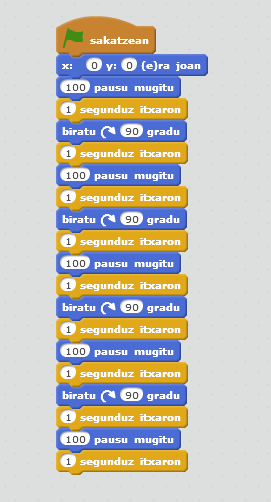

Scratch adibideak
Mugimendua sortzen
Zer uste duzu egiten duela programa honek? Proba ezazu scratchen.

Konturatu bazara spriteak mugiarazteko modu asko daude (Errotazio modua aldatuz). Beste Agindu batzuk ere erabili daitezke antzeko programa bat egiteko. Ausartzen zara aldaketak egiten?
Egin ezazu berdina egiten duen programa bat, baina oraingoan"biratu" agindua erabili beharrean erabili ezazu "norabidea hartu" agindua eta "100 pausu mugitu" agindua erabili beharrean "X aldaketa" edo "Y aldaketa" erabili.
Badakizu katuak marrazten dakiela? Arkatz agindu karpetaren barruan marrazteko hainbat agindu dituzue. Saiatu 100x 100eko karratu bat egiten.
Kontrol Aginduak
Programatzerako orduan kontrolak erabiltzea oso garrantzitzua da. Hasierako adibideetan "1 segunduz itxaron" agindua erabili dugu programa ez dadin oso arin ejekutatu. Hasierako programa hori ere 4 aldiz errepikatzen da. Iruditzen zaizu kontrol aginduren bat erabiltzea behin eta berriz agindu berak ez erabiltzeko?
Eta etengabe errepikatu nahi badut?
Konturatzen bazarete programa hau ez da sekula bukatuko. Programa geratzeko baldintzaren bat jartzea komeni da. Saiatu zaitez adibidez tekla bat sakatzean dena geldiarazten. Ez baduzu lortzen begiratu emaitza.
Laberintoaren jokoa
Orain arte oinarrizko aginduak ikusi dituzue. Agindu hauekin praktikatzeko eta beste batzukin lan egiten ikasteko joko bat egingo dugu.
Ikas dezagun Jolasten.
Lehenik, laberinto itxura duen hondo bat sortuko dugu. Marra lodiak egiten baditugu hobe. Hau egiteko sakatu eszenatokiaren gainean eta gero hondo jartzen duen pestañan. Nik laberintoa interneten bilatu dut eta fitxategi batetik inportatu dut baina nahi baduzue zuek nahi duzuen laberintoa marraztu dezakezue.
Gero laberintoaren bukaeran beste kolore bateko objektu bat marraztu behar duzue eta katua edo zuek aukeratutako spritea uzkurtu beharko duzue laberintotik joan dadin.
Hurrengo animazioan duzue nik jarraitu ditudan pausuak:
Hasi gaitezen programatzen.
Aukeratu katua eta Skriptak pestaña. Lehenik katua teklatuko geziekin mugiaraziko dugu. Horretarako, lehenik saguarekin katua laberintoaren hasierara eramango dugu. Hasieran dagoela " X eta Y ra joan" agindua erabiliko dugu programa hasten den bakoitzean katua hasierara bueltatu dadin.
Ondoren katua mugiaraziko dugu. Horretarako, etengabeko bukle bat sortuko du "betirako" aginduarekin. Bukle honen barnean lau baldintza jarriko ditu, "baldin goranzko gezia sakatuta al dago orduan", "baldin beheranzko gezia sakatuta al dago orduan", "baldin eskuinerazko gezia sakatuta al dago orduan" eta "baldin ezkerreranzko gezia sakatuta al dago orduan" eta baldintza bakoitzaren barnean katua geziaren norabidean mugiaraziko dugu.
Ulertu duzu? Saiatu egiten.
Konprobatuko zenuten katua laberintotik nahi eran pasatzen dela ezta? Nola egin dezakegu katua ez dadin laberintotik pasatu?
Ba adibidez beste baldintza bat sartuz. Baldintza honetan kolore beltza ikutzean hasieko posiziora itzularaziko dugu katua.
Eta noiz bukatzen da jokoa?
Ba oso erraz, bukaeran jarri duzuen kolore hori ikutzen duenean katuak. Baldintza hori betetzen denean, adibidez beste hondo bat agertarazi ahal duzue irabazlea jartzen duena eta programa geratu ahal duzue. Gogoratu programa berriz martxan jartzen badugu laberintoa duen hondoa jarri beharko duzuela berriz.
Eta noiz galtzen dut?
Joko guztietan galdu edo irabazi dezakegu. Normalean bizi batzuk izaten ditugu eta hauek galtzen goaz pantailan "GAME OVER" jarri arte ezta?
Ba guk berdina egingo dugu. "Biziak" izeneko aldagai bat sortuko dugu. Programa hasieran honi 3 balioa esleituko diogu. Katuak beltz kolorea ikutzen duen bakoitzean 1 kenduko diogu aldagai honi eta zerora heltzean denean GAME OVER jartzen duen hondo bat agertarazioko dugu.
Animo!
Asmatu joko bat!!
Adibide hauetan hainbat agindu ikusi dituzue. hala ere milaka aukera daude Scracth-en. Sor ezazu zuk zeuk joko bat eta bidali iezaizozu irakasleari.
Bihur zaitez sortzaile!!
Obra publicada con Licencia Creative Commons Reconocimiento Compartir igual 4.0